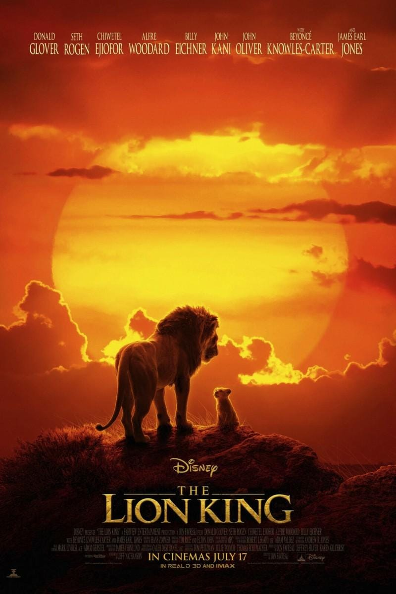

My Top 5 Movies
- The Lion King (2019 (Year): A young lion learns about responsibility, courage and leadership
- Black Panther (2018): A story about leadership, courage and protecting a kingdom.
- Avatar (2009): Explores nature, environmental protection and the relationship between humans and the environment.
- Finding Nemo (2003): A father searches for his missing son in the ocean, highlighting family and the marine world.
- The Pursuit of Happyness (2006): A story of determination, hope and continuing to work towards a better future.
My Favourite Playlist
Music I enjoy listening to Somali music, especially songs by Cali Zaki, the Somali musician. His music is part of what I enjoy listening to during my leisure time.
YouTube